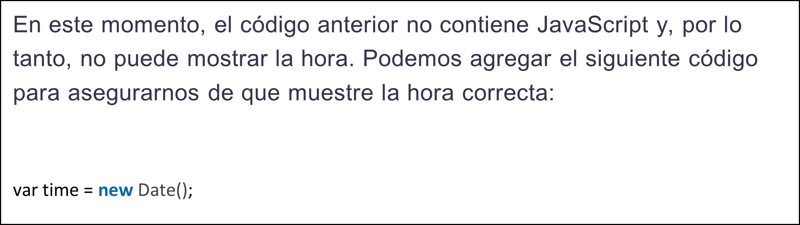
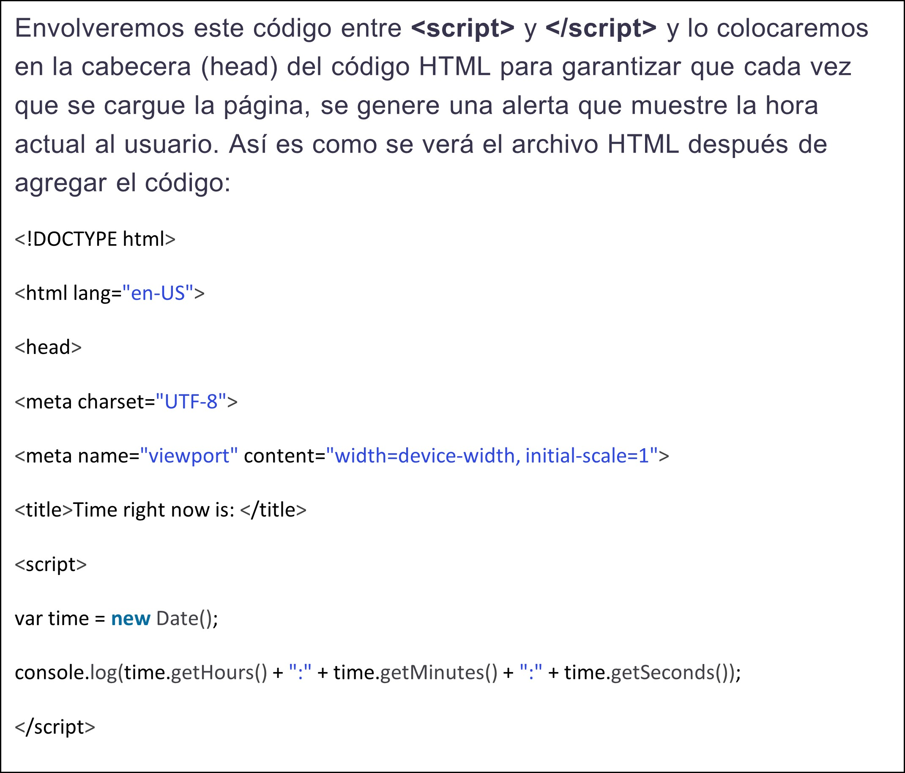
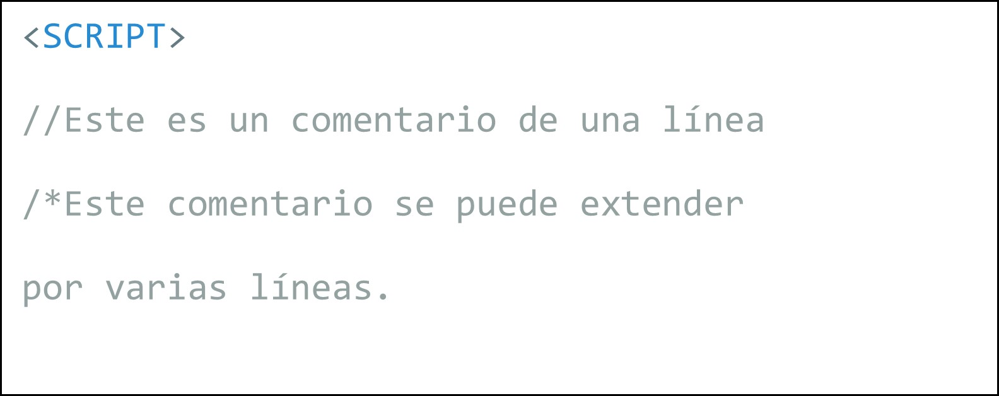

Las palabras reservadas son identificadores reservados predefinidos
que tienen un significado especial y no se pueden utilizar como identificadores en sus
programas, excepto si llevan delante el carácter @ como prefijo. Así, por ejemplo @for
es un identificador válido, pero no for ya que es una palabra reservada.
Agregar JavaScript directamente a un archivo HTML:
La primera forma de insertar JavaScript en HTML es directa.
Puedes hacerlo utilizando la etiqueta "script" que debe envolver todo el
código JavaScript que escribas. Se puede agregar el código JavaScript:
entre las etiquetas "head"
y las etiquetas "body"
javascript en el mismo documento html
El primer paso es tener en cuenta la etiqueta "script script" para luego escribir
(script type="text/javascript").
Por lo tanto, en base a un conjunto de etiquetas y sobre todo utilizando el atributo
type="text/javascript", podemos indicarle al software lo que vayamos a escribir, teniendo
en cuenta este ejemplo de código HTML que puedes copiar:


Sintaxis basica de javascript
El lenguaje Javascript tiene una sintaxis muy parecida a la de Java por estar basado en él. También es muy parecida a la del
lenguaje C, de modo que si el lector conoce alguno de estos dos lenguajes se podrá manejar con facilidad con el código. De todos
modos, en los siguientes capítulos vamos a describir toda la sintaxis con detenimiento, por lo que los novatos no tendrán ningún
problema con ella.
Un comentario es una parte de código que no es interpretada por el navegador y cuya utilidad radica en facilitar la lectura al
programador. El programador, a medida que desarrolla el script, va dejando frases o palabras sueltas, llamadas comentarios, que
le ayudan a él o a cualquier otro a leer mas fácilmente el script a la hora de modificarlo o depurarlo.
Ya se vio anteriormente algún comentario Javascript, pero ahora vamos a contarlos de nuevo. Existen dos tipos de comentarios
en el lenguaje. Uno de ellos, la doble barra, sirve para comentar una línea de código. El otro comentario lo podemos utilizar para
comentar varias líneas y se indica con los signos /* para empezar el comentario y */ para terminarlo. Veamos unos ejemplos.
Crearemos una variable pasándole una función como valor de la siguiente forma:
